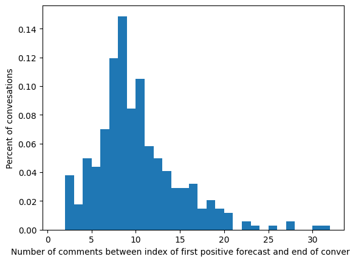

/Users/mishkin/Desktop/Research/Convo_Kit/ConvoKit_Disputes/src/modules/DataPreprocesser.py:111: FutureWarning: Setting an item of incompatible dtype is deprecated and will raise an error in a future version of pandas. Value '1702723625' has dtype incompatible with float64, please explicitly cast to a compatible dtype first.
self.utterancesDF.loc[13988, 'timestamp']= '1702723625'
2107
27498it [00:00, 58598.89it/s]
Code
test_corp.print_summary_stats()
Number of Speakers: 4214
Number of Utterances: 27498
Number of Conversations: 2107
Add conversation lengths as conversation metadata
1 is “impasse”
0 is “success”
Code
for convo in test_corp.iter_conversations(): convo_len =len(convo.get_utterance_ids()) # Count utterances in the conversation convo.add_meta("convo_len", convo_len) # Store as conversation-level metadata some_convo = test_corp.get_conversation("utt0_con0")print("Length of conversation:", some_convo.retrieve_meta("convo_len"))
Length of conversation: 14
Add Conversation Labels from Final Pre-processed Dataframe as conversation metadata
Code
for idx, row in final_data.getDataframe().iterrows(): convo_id =f"utt0_con{idx}"# generate conversation_id format from index label = row["dispute_outcome"] # update if your label column is named differentlyif convo_id in test_corp.conversations: test_corp.get_conversation(convo_id).meta["label"] = label
Creating Forecaster and Model Objects
CMV Model and Forecaster Object
Code
model2 = CRAFTModel( initial_weights="craft-cmv-finetuned", # or "craft-wiki-finetuned" torch_device="cuda"if torch.cuda.is_available() else"cpu")
Downloading craft-cmv-finetuned to /Users/mishkin/.convokit/saved-models/craft-cmv-finetuned
Downloading craft-cmv-finetuned/craft_full.tar from https://zissou.infosci.cornell.edu/convokit/models/craft_cmv/craft_full.tar (548.7MB)... Done
Downloading craft-cmv-finetuned/index2word.json from https://zissou.infosci.cornell.edu/convokit/models/craft_cmv/index2word.json (1.0MB)... Done
Downloading craft-cmv-finetuned/word2index.json from https://zissou.infosci.cornell.edu/convokit/models/craft_cmv/word2index.json (928.0KB)... Done
Code
# Use 'label' because we added it to conversation.meta["label"]forecaster2 = Forecaster( forecaster_model=model2, labeler="label", # uses conversation.meta["label"] forecast_attribute_name="prediction", forecast_prob_attribute_name="pred_score")
Wiki Model and Forecaster Object
Code
model = CRAFTModel( initial_weights="craft-wiki-finetuned", # or "craft-wiki-finetuned" torch_device="cuda"if torch.cuda.is_available() else"cpu")
Downloading craft-wiki-finetuned to /Users/mishkin/.convokit/saved-models/craft-wiki-finetuned
Downloading craft-wiki-finetuned/craft_full.tar from https://zissou.infosci.cornell.edu/convokit/models/craft_wikiconv/craft_full.tar (548.6MB)... Done
Downloading craft-wiki-finetuned/index2word.json from https://zissou.infosci.cornell.edu/convokit/models/craft_wikiconv/index2word.json (998.5KB)... Done
Downloading craft-wiki-finetuned/word2index.json from https://zissou.infosci.cornell.edu/convokit/models/craft_wikiconv/word2index.json (898.4KB)... Done
Code
# Use 'label' because we added it to conversation.meta["label"]forecaster = Forecaster( forecaster_model=model, labeler="label", # uses conversation.meta["label"] forecast_attribute_name="prediction", forecast_prob_attribute_name="pred_score")
Model Weight Info
craft‑wiki‑pretrained
Contains only the utterance and context encoder layers pre‑trained on the CGA‑Wikipedia data (via next‑comment prediction), but its classifier head (the SingleTargetClf) is still at its random initialization.
Intended as a starting point if you want to fine‑tune CRAFT on your own conversational data (you’ll call fit to learn the classifier weights).
craft‑wiki‑finetuned
Builds on the above by having already fine‑tuned the entire network (including the classifier head).
Ready for inference only—you can call transform immediately and get sensible forecasts without any further training.
Run predictions on fine-tuned WIKI dataset with CRAFT model
Fresh Kodis Corpus
Code
test_corp= corp.corpusBuilder(final_data)for idx, row in final_data.getDataframe().iterrows(): convo_id =f"utt0_con{idx}"# generate conversation_id format from index label = row["dispute_outcome"] # update if your label column is named differentlyif convo_id in test_corp.conversations: test_corp.get_conversation(convo_id).meta["label"] = label
27498it [00:00, 46639.98it/s]
Make predictions as conversation evolves (temporally) - When will this conversation derail?
Make predictions on last utterance only (classification) - Is this a derailed conversation?
Code
test_corp2= corp.corpusBuilder(final_data)for idx, row in final_data.getDataframe().iterrows(): convo_id =f"utt0_con{idx}"# generate conversation_id format from index label = row["dispute_outcome"] # update if your label column is named differentlyif convo_id in test_corp2.conversations: test_corp2.get_conversation(convo_id).meta["label"] = label
Horizon statistics (# of comments between first positive forecast and conversation end):
Mean = 1.0, Median = 1.0
Run predictions on fine-tuned REDDIT CMV dataset with CRAFT model
Fresh Kodis Corpus
Code
test_corp3= corp.corpusBuilder(final_data)for idx, row in final_data.getDataframe().iterrows(): convo_id =f"utt0_con{idx}"# generate conversation_id format from index label = row["dispute_outcome"] # update if your label column is named differentlyif convo_id in test_corp3.conversations: test_corp3.get_conversation(convo_id).meta["label"] = label
27498it [00:00, 40452.22it/s]
Make predictions as conversation evolves (temporally) - When will this conversation derail?
Horizon statistics (# of comments between first positive forecast and conversation end):
Mean = 10.006060606060606, Median = 9.0
Make predictions on last utterance only (classification) - Is this a derailed conversation?
Code
test_corp5= corp.corpusBuilder(final_data)for idx, row in final_data.getDataframe().iterrows(): convo_id =f"utt0_con{idx}"# generate conversation_id format from index label = row["dispute_outcome"] # update if your label column is named differentlyif convo_id in test_corp5.conversations: test_corp5.get_conversation(convo_id).meta["label"] = label
Compare Predicitons on test sets for CMV and WIKI datasets using respecitve fine-tuned CRAFT Models (todo)
for reproducability, need to check if any additions since 2018 for wiki data as it is public and growing. reddit cmv was created specifically for this paper, so no updates expected.
Comparing fine-tuned Models on KODIS Corpus
Running predictions on both fine-tuned wiki and cmv CRAFT models temporally on all utterances
Code
import pandas as pdimport matplotlib.pyplot as pltfrom sklearn.metrics import roc_auc_score, accuracy_score, f1_scorefrom convokit import Corpus, Forecaster, CRAFTModelfrom modules.DataPreprocesser import DataPreprocesser # adjust imports to your project structurefrom modules import CorpusUtils as corp# corpusBuilder should return a ConvoKit Corpuscorp1 = corp.corpusBuilder(final_data)corp2 = corp.corpusBuilder(final_data)# Assign conversation-level labelsfor idx, row in final_data.getDataframe().iterrows(): convo_id =f"utt0_con{idx}" label = row["dispute_outcome"]if convo_id in corp1.conversations: corp1.get_conversation(convo_id).meta["label"] = labelif convo_id in corp2.conversations: corp2.get_conversation(convo_id).meta["label"] = label# 2. Initialize two forecasters with different CRAFT weightsdevice ="cuda"if torch.cuda.is_available() else"cpu"craft_wiki = CRAFTModel("craft-wiki-finetuned", torch_device=device)craft_cmv = CRAFTModel("craft-cmv-finetuned", torch_device=device)forecaster1 = Forecaster(craft_wiki, "label")forecaster2 = Forecaster(craft_cmv, "label")# 3. Helper to apply transform and return utterance-level DataFramedef get_forecast_df(forecaster, corpus, selector=lambda ctx: True):# Annotate the corpus annotated = forecaster.transform(corpus, selector)# Extract utterance-level DataFramereturn annotated# 4. Transform both corporacorp1 = get_forecast_df(forecaster1, corp1)corp2 = get_forecast_df(forecaster2, corp2)
Getting average derailement prediction and frequency of forecast probabilities across all utterances
Prediciton is per utterance on surface, but CRAFT model behind-the-scenes makes predicitons on encoded contexts which contain the conversation history up to current utterance.
We get the frequency of KODIS utterances across 50 probabilities [0, .02, .04, …,1] binned from the predicited probabilities of each utterance by the fine-tuned cmv and fine-tuned wiki model
Insights
craft-wiki tends to TODO Make 3D plot, add another dimension for the length of current context (collapse by coversation by averaging over all convos that have that context length)
Code
import pandas as pdimport matplotlib.pyplot as pltfrom sklearn.metrics import roc_auc_score, accuracy_score, f1_score# 1) extract the utterance‑level DataFrames from the two corporautt_df1 = corp1.get_utterances_dataframe()utt_df2 = corp2.get_utterances_dataframe()# 5. Keep only the forecast columns and drop NAforecast_df1 = utt_df1[['meta.forecast', 'meta.forecast_prob']].dropna()forecast_df2 = utt_df2[['meta.forecast', 'meta.forecast_prob']].dropna()# 6. Summary statisticssummary = pd.DataFrame({'mean_prob': [forecast_df1['meta.forecast_prob'].mean(), forecast_df2['meta.forecast_prob'].mean()],'std_prob': [forecast_df1['meta.forecast_prob'].std(), forecast_df2['meta.forecast_prob'].std()],'median_prob':[forecast_df1['meta.forecast_prob'].median(),forecast_df2['meta.forecast_prob'].median()],}, index=['corp-wiki', 'corp-cmv'])print("Summary statistics for forecast probabilities:")print(summary)# 7. Plot histogramsplt.figure(figsize=(8,4))plt.hist(forecast_df1['meta.forecast_prob'], bins=50, alpha=0.6, label='craft-wiki')plt.hist(forecast_df2['meta.forecast_prob'], bins=50, alpha=0.6, label='craft-cmv')plt.xlabel('Forecast probability')plt.ylabel('Count')plt.legend()plt.show()
to create these plots, I looked at Forecasters code for aggregating utternce-levele metrics on a conversation level where:
np.max(forecast_scores) is highest probability the model ever assigned to any utterance in this conversation
np.max(forecasts) is if the model ever cross its decision threshold and predict 1 (derailement) for thsi conversation
Insights
baseline positive class rate (impasse dispute) for KODIS is 17.6% out of current 2107 disputes.
PR Curve
bottoms out at baseline accuracy with higher decision thresholds, so no presicion-accuracy trade-off. Essesntially, lower decision threshold -> model is as good as baseline posititve rate, so it never actually predicts derailment. Probably due to high impassee/success class imbalance
AUC Curve
AUC still looks high for both bc of the class imbalance for derailement disputes I think– so this may be misleading currently
need to downsample and check if we do better than random
Positive class rate (Derailement): 17.61%
Baseline accuracy (derailement): 0.176
Comparing forcaster summaries for both fine-tuned wiki and cmv CRAFT models predictions
Ran using Forecasters summarize function for conversation-level statistics
both reddit and cmv have Utterance-level labels for derailed comment as well as classify derailment on a conversation level if the conversation contains a derailement comment. ### Insights Forecast Horizon: “How early can we detect derailement?”
Since our dataset has an average length of 13.5 utterances, the forecast horizon on average is 9.72 and 10 respecitvely for the WIKI and cmv models, meaning derailement is forecast towards the end of a KODIS dispute.
This measures the number of utterances after the derailed utterance the model predicted in a coversation.
Conversation Metrics - On a conversation-level, accuracy of predicting derailement is pretty low and F1 scores are low for both fine-tuned models - Accuracy: The model mispredicts derailements most of the time - out of 2017 disputes, 45% and 24% were wrongly flagged as derailed. -> low Accuracy - Recall: Models are very sensitive to derailement events and for all actual derailed disputes, it correctly flags them -> high Recall - FPR: Since there are many successul disputes (majority class), the models flag a lot of them as derailed -> high FPR
The above is why the “good” AUC curve is misleading I think
Code
import pandas as pdfrom IPython.display import displaylengths = [len(convo.get_utterance_ids())for convo in corp2.iter_conversations()]avg_len =sum(lengths) /len(lengths)print(f"Average conversation length in pre-process KODIS: {avg_len:.2f} utterances")print("\n-------------------")print("Stats for fine-tuned wiki model predicitons \n -------------------")conv_df1, metrics1 = forecaster1.summarize(corp1)print("\n-------------------")print("Stats for fine-tuned cmv model predicitons \n -------------------")conv_df2, metrics2 = forecaster2.summarize(corp2)metrics_df = pd.DataFrame([metrics1, metrics2], index=['corp1','corp2'])print("=== Overall metrics ===")display(metrics_df)# 3) Merge the two conversation‐level forecasts side by side# rename so you can see which is whichconv1 = conv_df1.rename(columns={'label':'label','score':'score_wiki','forecast':'forecast_wiki'})conv2 = conv_df2.rename(columns={'score':'score_cmv','forecast':'forecast_cmv'})# join on conversation_idmerged = conv1.join(conv2[['score_cmv','forecast_cmv']], how='inner')print("=== Conversation‑level forecasts comparison ===")display(merged)
Average conversation length in pre-process KODIS: 13.05 utterances
-------------------
Stats for fine-tuned wiki model predicitons
-------------------
Accuracy 0.450403
Precision 0.233220
Recall 0.927224
FPR 0.651498
F1 0.372698
dtype: float64

Horizon statistics (# of comments between first positive forecast and conversation end):
Mean = 9.723837209302326, Median = 9.0
-------------------
Stats for fine-tuned cmv model predicitons
-------------------
Accuracy 0.240152
Precision 0.174603
Recall 0.889488
FPR 0.898618
F1 0.291906
dtype: float64
Horizon statistics (# of comments between first positive forecast and conversation end):
Mean = 10.006060606060606, Median = 9.0
=== Overall metrics ===
Accuracy
Precision
Recall
FPR
F1
corp1
0.450403
0.233220
0.927224
0.651498
0.372698
corp2
0.240152
0.174603
0.889488
0.898618
0.291906
=== Conversation‑level forecasts comparison ===
label
score_wiki
forecast_wiki
score_cmv
forecast_cmv
conversation_id
utt0_con0
0
0.481174
0.0
0.912546
1.0
utt0_con1
0
0.785086
1.0
0.798515
1.0
utt0_con2
0
0.540673
0.0
0.734454
1.0
utt0_con3
0
0.376359
0.0
0.881353
1.0
utt0_con4
0
0.868184
1.0
0.775170
1.0
...
...
...
...
...
...
utt0_con2102
0
0.677453
1.0
0.727126
1.0
utt0_con2103
1
0.954360
1.0
0.890551
1.0
utt0_con2104
0
0.645120
1.0
0.844538
1.0
utt0_con2105
0
0.737709
1.0
0.950130
1.0
utt0_con2106
0
0.264288
0.0
0.812961
1.0
2107 rows × 5 columns
Average length of tokenized utterances for wiki, cmv, and kodis corpora from CRAFT tokenization scheme
CRAFT has max tokenization length of 80 tokens per utterance. Is this relevant to the performance in anyway? More specifically:
what are the tokenization lengths of the utterances for the data used in the train sets for CMV and Wiki?
what is the average tokenization length for a KODIS utterance?
Is it even relevant to affecting performance, and how to measure this?
Code
from convokit import download, Corpuscorpus_cmv = Corpus("/Users/mishkin/Desktop/Research/Convo_Kit/ConvoKit_Disputes/data/convokit_datasets/conversations-gone-awry-cmv-corpus")corpus_wiki = Corpus("/Users/mishkin/Desktop/Research/Convo_Kit/ConvoKit_Disputes/data/convokit_datasets/conversations-gone-awry-corpus")
Get tokenized utterances from training set data used in “Trouble on the Horizon” paper.
MAX_LENGTH = 80 for tokenized utterances
Code
convo_ex =next(corpus_wiki.iter_conversations())for key, val in convo_ex.meta.items():print(f"{key:20s} → {val}")print("\n")convo_ex2 =next(corpus_cmv.iter_conversations())for key, val in convo_ex2.meta.items():print(f"{key:20s} → {val}")
Code
import osimport numpy as npfrom convokit import download, Corpusfrom convokit.forecaster.CRAFT.data import ( loadPrecomputedVoc, tokenize, Voc,)'''Need to get only the utterances used for training fine-tuned model. Choose only those utterances in conversations where mete.split == train'''def load_craft_vocab(model_name: str) -> Voc: base = download(model_name, data_dir=os.path.expanduser("~/.convokit/models"))return loadPrecomputedVoc( model_name, os.path.join(base, "word2index.json"), os.path.join(base, "index2word.json"), )voc_wiki = load_craft_vocab("craft-wiki-finetuned")voc_cmv = load_craft_vocab("craft-cmv-finetuned")
Code
""" Walk through all conversations in `corpus`, select only those with convo.meta["split"] == split, tokenize each utterance via CRAFT's tokenize(voc, text), and return summary stats on token counts."""def summarize_token_lengths(corpus: Corpus, voc: Voc, split: str=None): lengths = []for convo in corpus.iter_conversations():# if a split is specified, filter; otherwise include everythingif split isnotNoneand convo.meta.get("split") != split:continuefor utt in convo.iter_utterances(): toks = tokenize(voc, utt.text or"") lengths.append(len(toks))ifnot lengths:return {"n_utt": 0, "mean": np.nan, "median": np.nan, "std": np.nan} arr = np.array(lengths)return {"n_utt": int(arr.size),"mean": float(arr.mean()),"median": float(np.median(arr)),"std": float(arr.std()), }# -- 5) run it on all four settings --results = {"craft‑wiki": summarize_token_lengths(corpus_wiki, voc_wiki, split="train"),"craft‑cmv": summarize_token_lengths(corpus_cmv, voc_cmv, split="train"),"kodis‑wiki": summarize_token_lengths(corp1, voc_wiki),"kodis‑cmv": summarize_token_lengths(corp1, voc_cmv),}df = pd.DataFrame(results).T.reset_index().rename(columns={"index":"vocab"})display(df)